Mes centres d'intérêt
Lecture
J'adore lire, que ce soit des romans, des mangas ou des manhwas (version coréenne des mangas). La lecture me permet de m'évader, de découvrir de nouveaux univers et d'enrichir mon imagination.
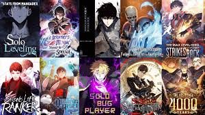
Jeux vidéo & esport
Les jeux vidéo occupent une place importante dans ma vie. J'apprécie particulièrement les jeux solo en monde ouvert. L'esport m'intéresse aussi beaucoup pour l'esprit d'équipe, la stratégie et la passion qui animent les joueurs et les communautés.
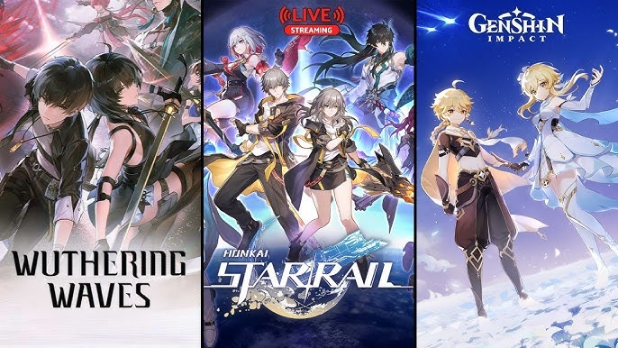

Animés & Films
Je suis passionnée par les animés, les films et séries. J'aime découvrir des œuvres japonaises, mais aussi des films du monde entier, pour leur créativité et les émotions qu'ils procurent. Le genre fantastique et la science-fiction sont mes préférés, mais j'apprécie aussi les drames et les comédies.
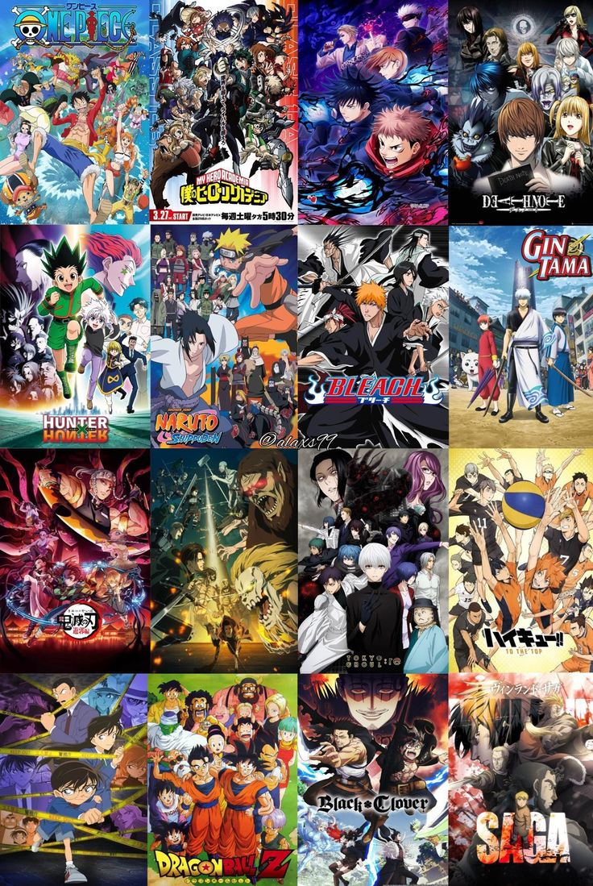
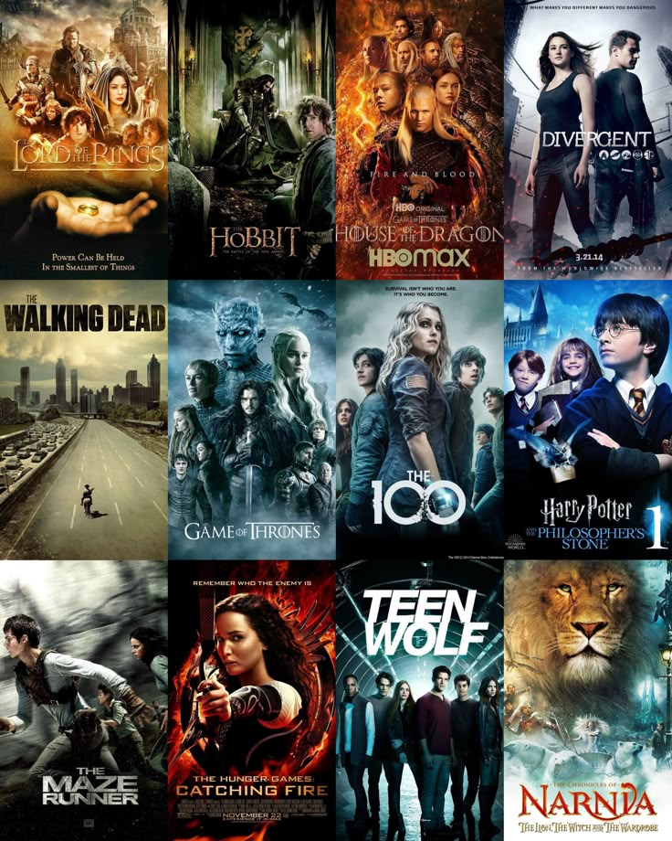
Lieux cultes d'anime
Certains animés m'ont marquée par leurs décors inspirés de lieux réels au Japon. J'adore retrouver ces endroits dans les œuvres et j'ai déjà pu en visiter certains, comme Your Name ou Suzume !


Culture japonaise
La nourriture japonaise
J'apprécie énormément la gastronomie japonaise : sushi, ramen, okonomiyaki, mochi... J'aime découvrir de nouvelles saveurs et essayer de cuisiner des plats traditionnels chez moi. La présentation des plats et les saveurs de ceux-ci sont des aspects que j'apprécie particulièrement.
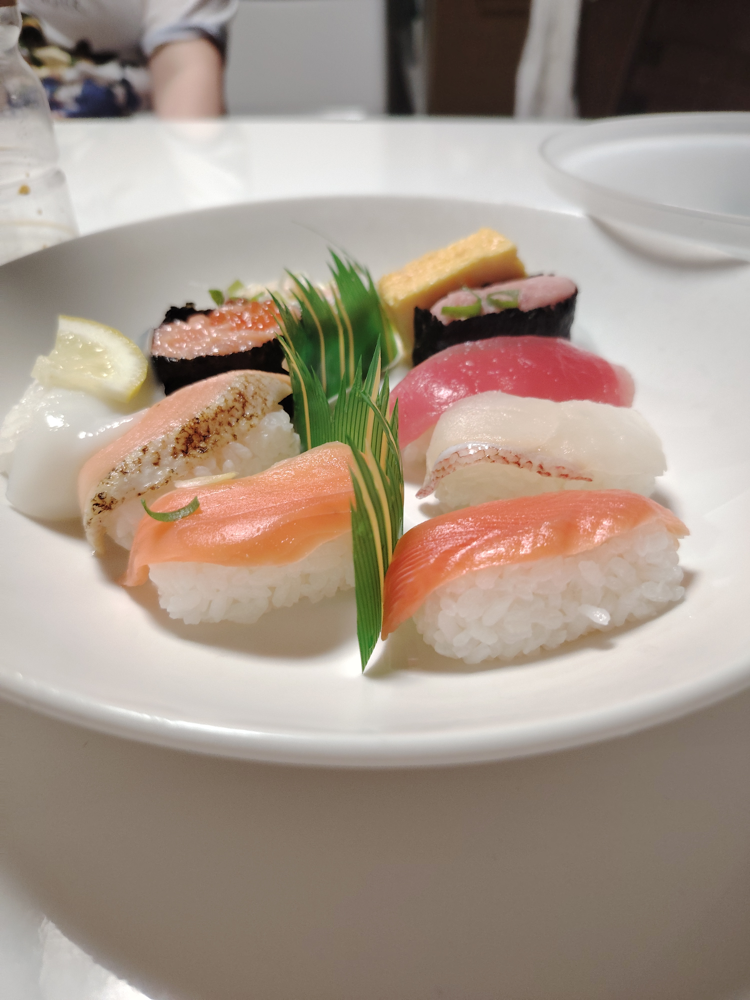
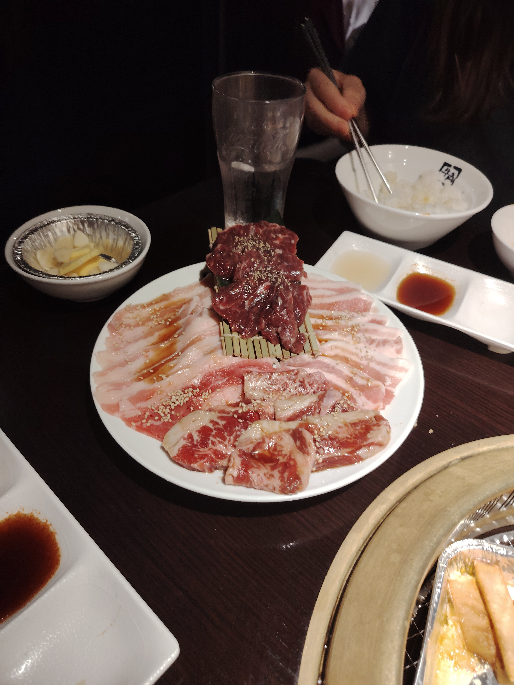
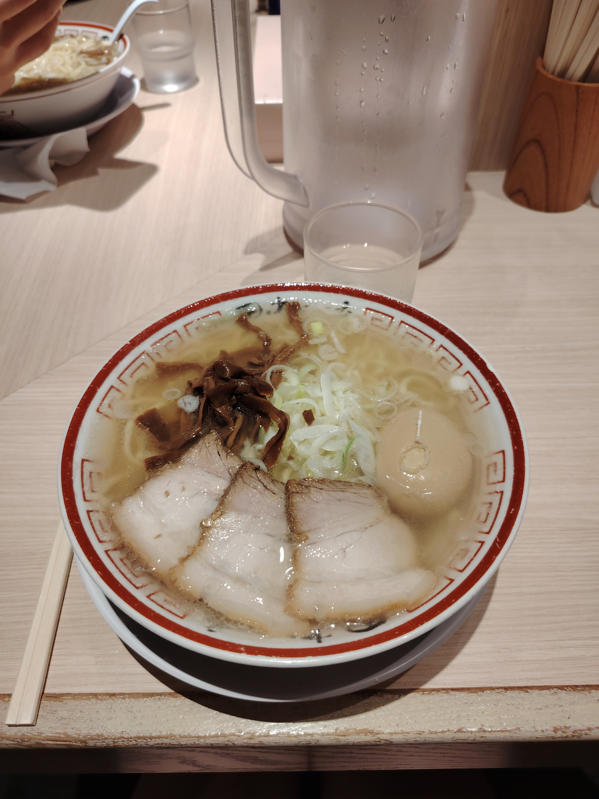
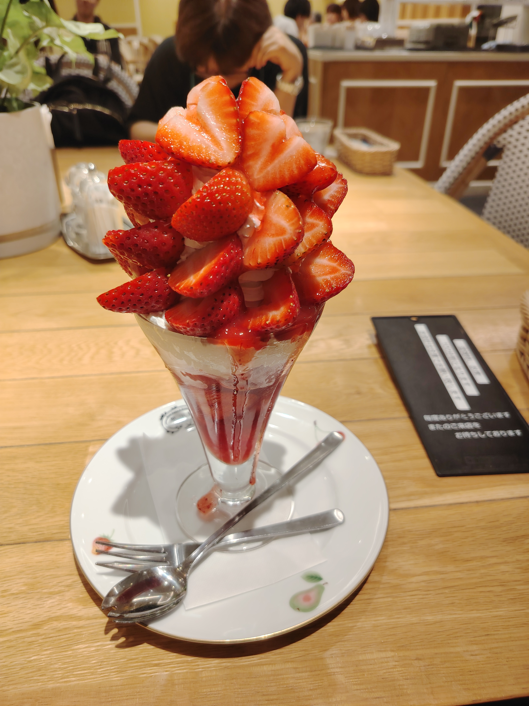
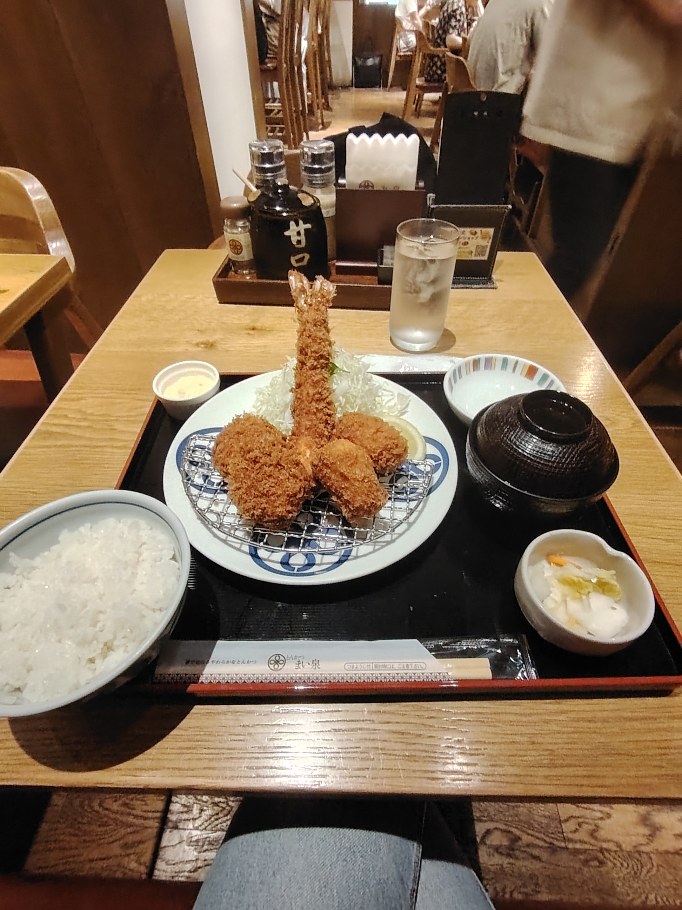
La culture et les traditions
Le Japon est aussi fascinant pour ses temples, ses jardins, ses festivals et ses coutumes. J'admire la beauté des sanctuaires shinto, la sérénité des jardins zen, et la richesse des fêtes traditionnelles comme le Hanami ou le Tanabata. J'ai eu la chance de voyager seule au Japon dans le cadre d'un séjour linguistique avec EF Education, ce qui m'a permis de découvrir ces aspects culturels de près et de renforcer mon intérêt pour ce pays.

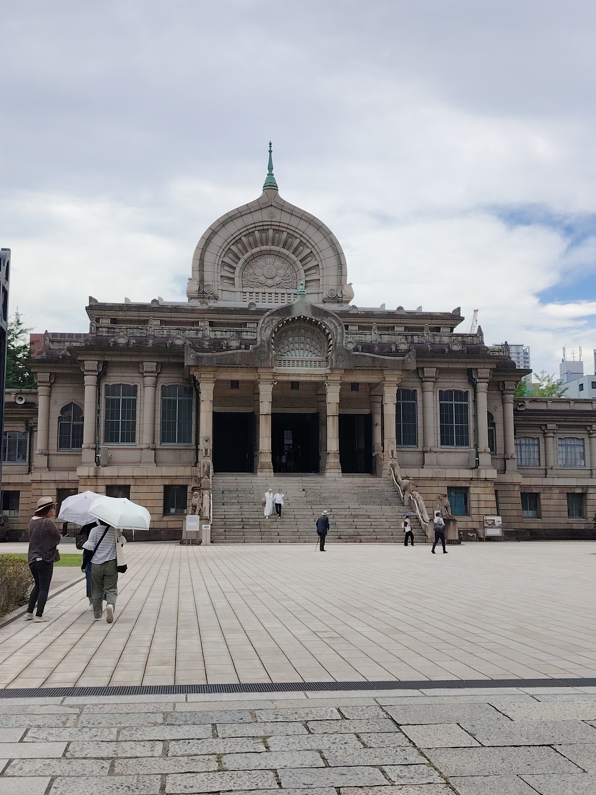


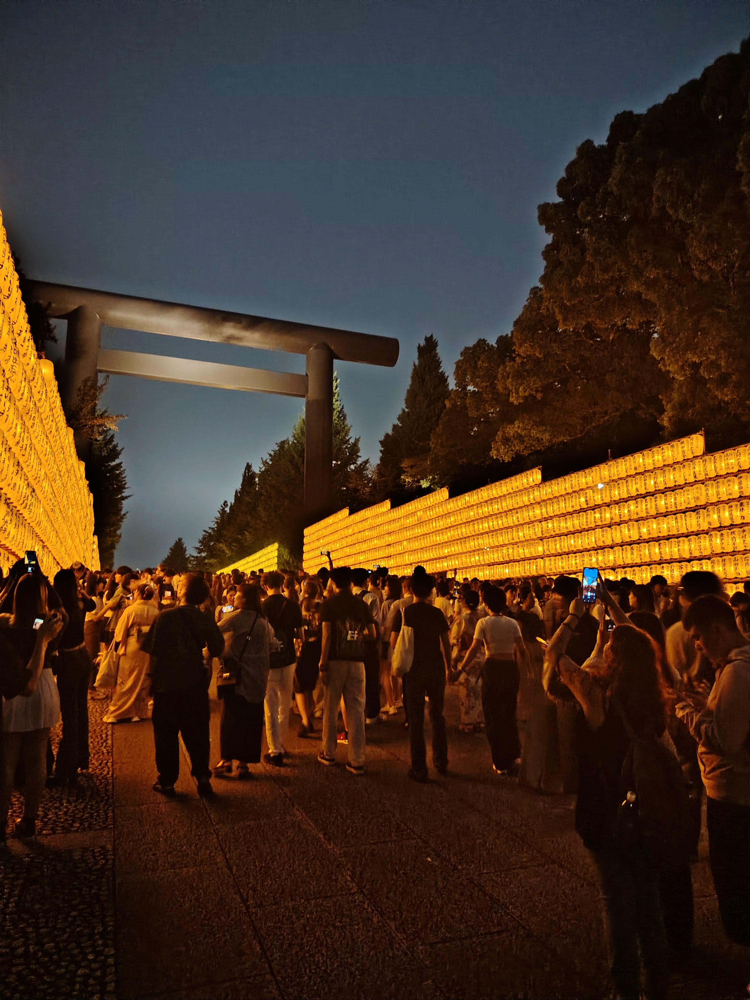
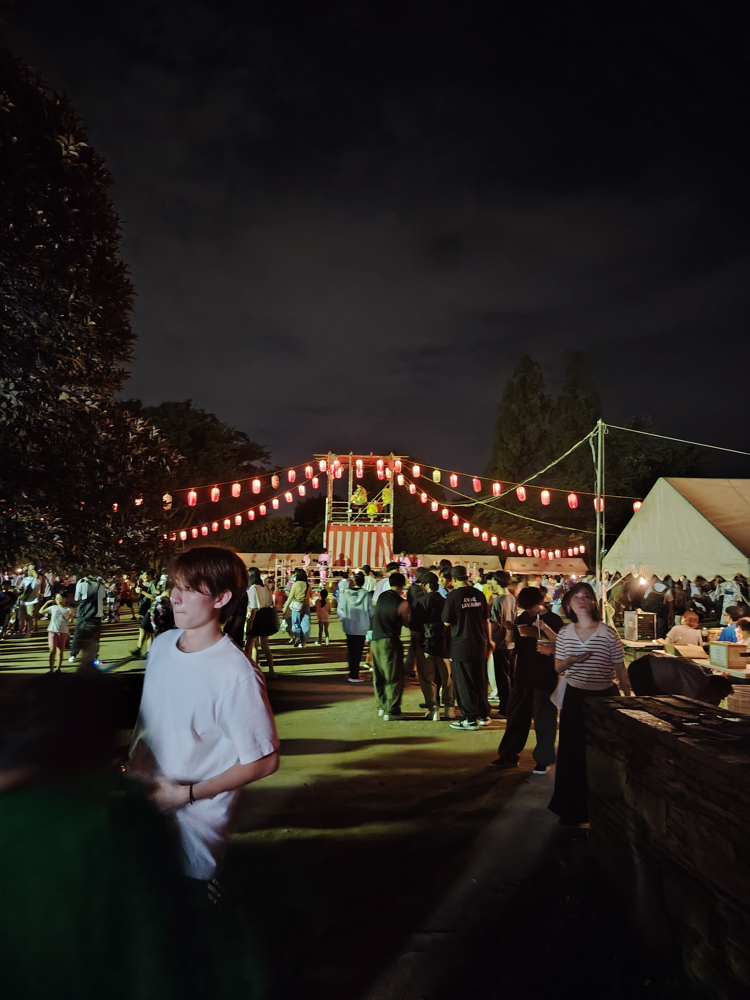